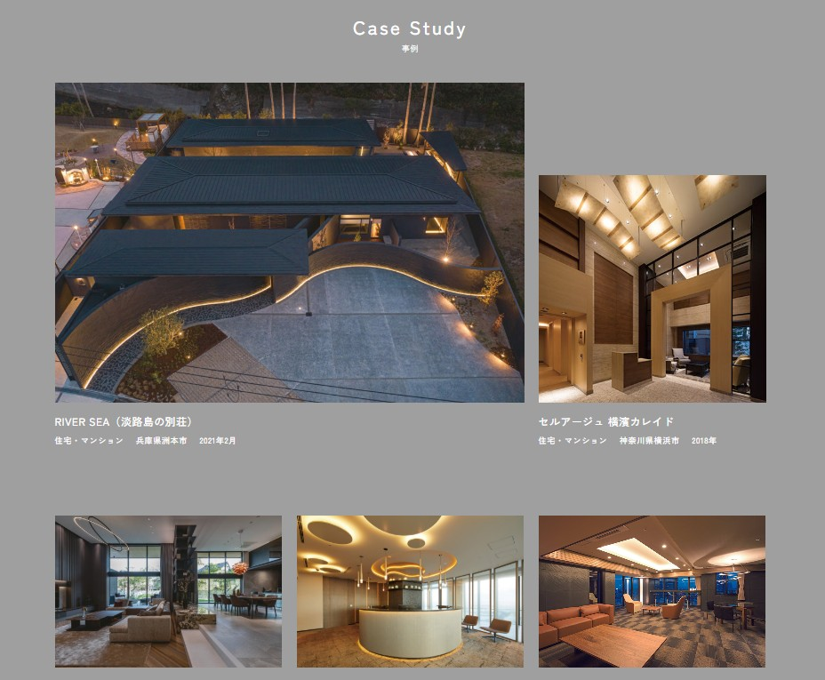
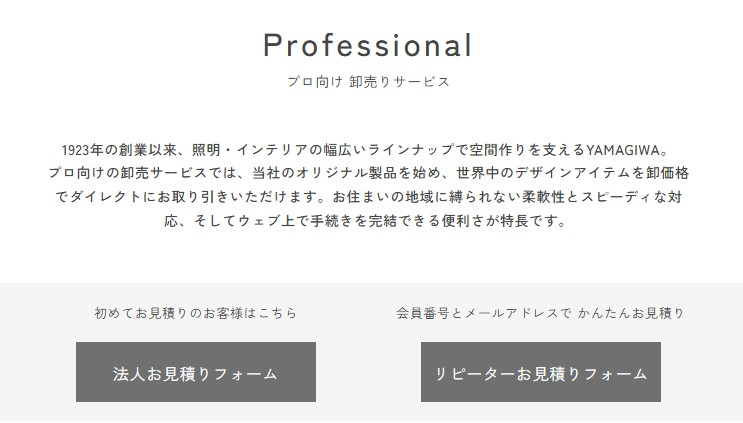

法人向けサイト改善
必要な情報を、必要な顧客へ。
見積もり導線を再設計。
法人顧客からの問い合わせ内容をもとに、導入実績や短納期対応に関する情報の見せ方を見直しました。利用目的に応じた情報整理と見積もり導線の改善に取り組み、2023年度の見積件数は前年度比約2倍となりました。

約2倍見積件数2023年度実績・2022年度比
約1.7倍成約金額2023年度実績・2022年度比
Purpose目的
法人顧客が導入実績や対応サービスを確認し、安心して見積もりを依頼できる環境を整える。
Issue課題
導入実績や短納期対応に関する情報が探しにくく、サービスの検討から見積もり依頼までの導線にも改善の余地があった。
Action施策
導入事例や法人向けサービスの情報を整理し、見積もりまでの導線を再構成。新規顧客とリピート顧客でフォームへの入口を分け、利用状況に応じた情報設計を行った。
Before / After改善の内容
| 改善対象 | Before | After |
|---|---|---|
| 導入実績 | 実績を探しにくい | 導入事例を拡充し、実績を確認しやすく整理 |
| 見積もり | 新規・リピート顧客の導線が共通 | 顧客の利用状況に応じて入口を分岐 |


Data Utilizationデータの活用
03 見積データを活用した広告改善
商品別・企業別の問い合わせ傾向を分析し、広告に使用する写真や配信セグメントを選定。ターゲットに合わせて広告バナー・LPの訴求文やCTAの文言を調整しました。
Projectプロジェクト情報
- 対象
- 建築設計事務所・工務店・不動産会社・ホテル・旅館などの法人顧客
- 担当
- 企画／LP構成／情報設計／見積フォーム導線設計／実装・進行管理